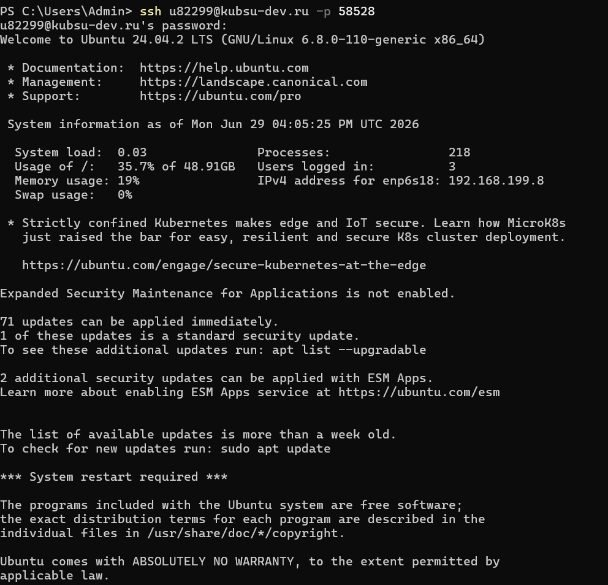
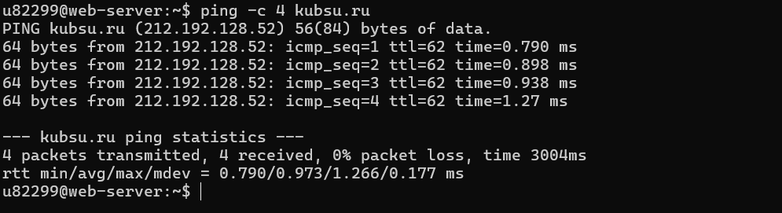
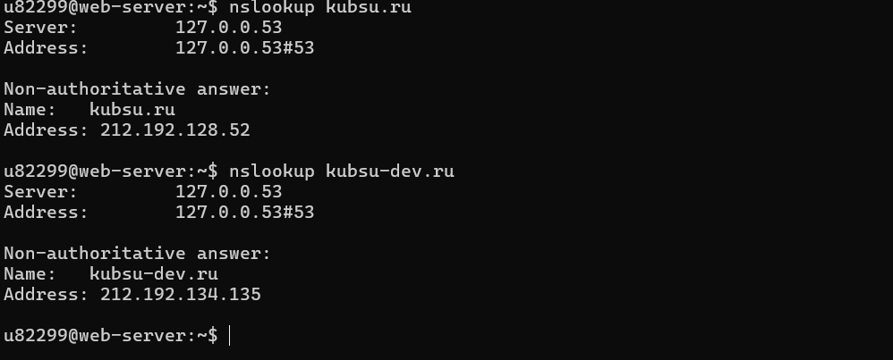
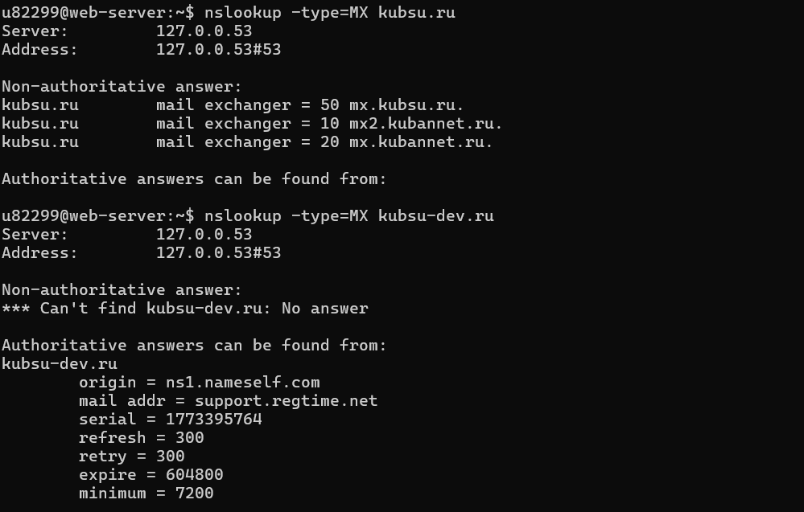
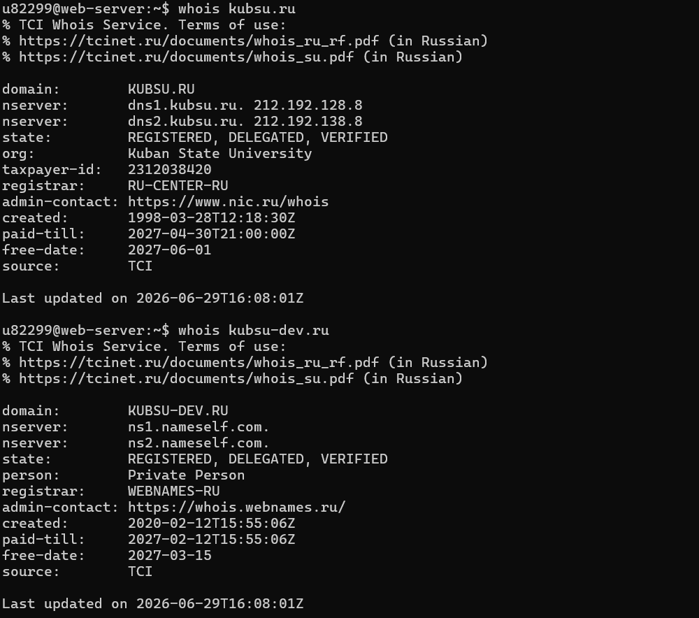
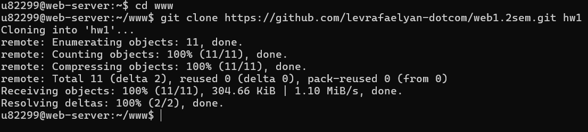
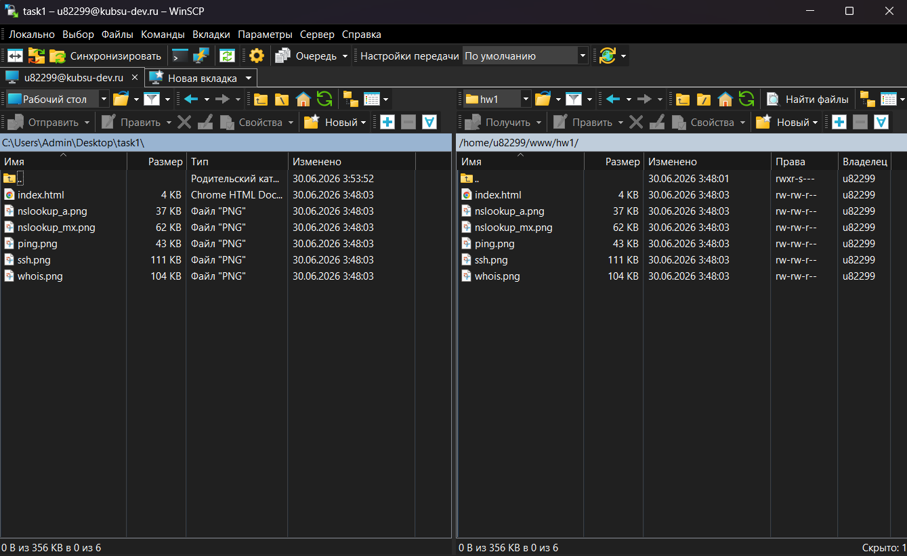

Подключение к учебному серверу kubsu-dev.ru по SSH через порт 58528
ssh u82299@kubsu-dev.ru -p 58528

IP-адрес сервера kubsu.ru получен командой ping
ping -c 4 kubsu.ru

A-записи доменов kubsu.ru и kubsu-dev.ru
nslookup kubsu.runslookup kubsu-dev.ru

MX-записи доменов kubsu.ru и kubsu-dev.ru
nslookup -type=MX kubsu.runslookup -type=MX kubsu-dev.ru

Дата регистрации доменов kubsu.ru и kubsu-dev.ru
whois kubsu.ruwhois kubsu-dev.ru

Клонирование GitHub репозитория в каталог www на учебном сервере
cd wwwgit clone https://github.com/твой_логин/web-task1.git hw1

Скачивание файлов задания с сервера на локальный компьютер через SFTP
Хост: kubsu-dev.ru | Порт: 58528 | Протокол: SFTP
